15 构建自己的权衡分析
6 月 10 日，星期一，10:01
会议室不知为何比去年九月那个决定命运的日子明亮得多。当时，Sysops Squad 的业务发起人几乎要彻底关闭整个支持合同业务线。会议开始前，众人在会议室里相互交谈，形成一种这里许久未曾出现的活力。
“好吧，”主要业务发起人、Sysops Squad 工单应用负责人 Bailey 说，“我想我们应该开始了。大家都知道，这次会议要讨论 IT 部门如何扭转局面，修复九个月前那场灾难。”
“我们称之为回顾会，”Addison 说，“它非常有用，可以发现以后怎样把事情做得更好，也能讨论哪些做法似乎效果不错。”
“那就告诉我们，什么做得特别好？从技术角度看，你们怎样挽救了这条业务线？”Bailey 问。
“并不是某一件事，”Austen 说，“而是许多事情的组合。首先，IT 团队学到了宝贵一课：应该用业务驱动因素来分析问题和构建方案。以前，我们总是只关注问题的技术方面，因此从来看不到全貌。”
“这是一方面，”Dana 说，“对我和数据库团队而言，改变局面的另一件事，是开始与应用团队更紧密地合作，共同解决问题。以前，数据库这边只做自己的事，应用开发团队也各做各的。如果没有协作并共同迁移 Sysops Squad 应用，我们绝不可能走到今天。”
“对我来说，是学会正确分析权衡，”Addison 说，“如果没有 Logan 的指导、洞见与知识，我们不会有现在的局面。正因为 Logan，我们才能从业务角度证明方案的合理性。”
“说到这里，”Bailey 说，“我想在座所有人都同意：你们最初的业务论证促使我们给了你们最后一次机会，修复当时的混乱。这是我们过去从未见过的，说实话，让我们很惊讶——是好的一面。”
“好，”Parker 说，“既然大家都同意现在进展顺利，怎样保持这种节奏？怎样鼓励公司其他部门和事业部，避免陷入我们以前那样的困境？”
“纪律，”Logan 说，“继续保持新习惯：为所有决策建立权衡表，利用架构决策记录持续记录并沟通决策，与其他团队持续协作解决问题。”
“可这不是给工作增加很多额外流程与手续吗？”市场部负责人 Morgan 问。
“不是，”Logan 说，“这就是架构。而且你们已经看到，它有效。”
贯穿本书的统一案例，展示了如何在分布式架构中进行通用权衡分析。不过，架构中很少存在通用方案；即使存在，对于高度具体的架构及其独特问题，往往也不完整。因此，我们不认为第 2 章的通信分析已经穷尽所有可能，而是把它视为起点：读者可以针对自己问题空间中相互纠缠的独特元素继续增加分析维度。
为此，本章会给出建立权衡分析的一些建议，采用与本书推导结论时相同的许多技术。
第 2 章介绍过现代权衡分析的三步过程：
- 找出哪些部分相互纠缠。
- 分析它们如何彼此耦合。
- 通过确定变更对相互依赖系统的影响来评估权衡。
下面讨论每一步的部分技术和注意事项。
15.1 寻找相互纠缠的维度
架构师的第一步，是发现哪些维度相互纠缠或编织在一起。答案对每个具体架构都不同，但熟悉现有整体生态、能力与约束的资深开发人员、架构师、运维人员及其他角色能够发现它们。
15.1.1 耦合
分析的第一部分要回答架构师的一个问题：架构中的各部分如何彼此耦合？软件开发世界对耦合有很多定义；本次练习采用最简单、最直观的版本：如果有人改变 X，会不会迫使 Y 也改变？
第 2 章介绍过架构量子之间的静态耦合，它能提供技术耦合的完整结构图。没有通用工具可以建立这张图，因为每个架构都独一无二。不过，在组织内部，开发团队可以手工或自动建立静态耦合图。
例如，为架构中的微服务建立静态耦合图，架构师需要收集以下细节：
- 操作系统/容器依赖；
- 通过传递依赖管理交付的依赖，例如框架与库；
- 对数据库、搜索引擎、云环境等持久化设施的依赖；
- 服务完成自举所需的架构集成点；
- 支持与其他量子通信所需的消息基础设施，例如消息代理。
静态耦合图不考虑那些只通过工作流通信与当前量子耦合的其他量子。例如，如果 AssignTicket 服务在工作流中与 ManageTicket 协作，却没有其他耦合点，那么两者在静态上相互独立，只在实际工作流中动态耦合。
已经利用自动化建立大部分环境的团队，可以给生成机制增加一项能力，在构建系统时记录耦合点。
本书的目标是衡量分布式架构中耦合与通信的权衡。为了确定动态量子耦合的三个维度，我们研究了数百个分布式架构案例，包括微服务与其他架构，从中确定共同耦合点。换句话说，我们考察的所有案例都对通信、一致性和协调三个维度的变化敏感。
这个过程突出了迭代式架构设计的重要性。没有哪位架构师聪明到第一稿总能完美。为工作流建立示例拓扑——就像本书所做的那样——可以让架构师或团队形成权衡矩阵，比临时方法更快、更全面地分析问题。
15.1.2 分析耦合点
架构师或团队识别出要分析的耦合点后，下一步是用轻量方式为可能的组合建模。某些组合可能不可行，可以跳过。分析目标是确定架构师需要研究哪些力量，换句话说，哪些力量需要进行权衡分析？
例如，在架构量子动态耦合分析中，除通信、一致性与协调三种力量外，我们选择耦合、复杂度、响应速度/可用性，以及扩展能力/弹性作为主要权衡关注点。并行 Saga（aeo）的评分表再次列于表 表格 15.1。
| 并行 Saga 模式 | 评分 |
|---|---|
| 通信 | 异步 |
| 一致性 | 最终 |
| 协调 | 集中式 |
| 耦合 | 低 |
| 复杂度 | 低 |
| 响应速度/可用性 | 高 |
| 扩展能力/弹性 | 高 |
建立评分列表时，我们分别考察每一种设计方案，也就是每种已命名模式；只在最后把它们组合起来观察差异，见表 表格 15.2。
15.1.2.1 权衡
| 模式 | 耦合程度 | 复杂度 | 响应速度/可用性 | 扩展能力/弹性 |
|---|---|---|---|---|
| 史诗 Saga | 极高 | 低 | 低 | 极低 |
| 传话 Saga | 高 | 高 | 低 | 低 |
| 童话 Saga | 高 | 极低 | 中 | 高 |
| 时间旅行 Saga | 中 | 低 | 中 | 高 |
| 奇幻 Saga | 高 | 高 | 低 | 低 |
| 恐怖故事 | 中 | 极高 | 低 | 中 |
| 并行 Saga | 低 | 低 | 高 | 高 |
| 选集 Saga | 极低 | 高 | 高 | 极高 |
独立分析各模式后，我们建立矩阵比较特征，并得出一些有趣观察。第一，耦合程度与扩展能力/弹性呈直接负相关：模式中的耦合越多，可扩展性越差。这在直觉上很合理；工作流涉及的服务越多，架构师就越难设计扩展方案。
第二，我们观察到响应速度/可用性与耦合程度也有类似关系。它不像前一种相关性那么直接，却同样显著：耦合越高，响应速度和可用性越低，因为工作流涉及的服务越多，任意一项服务失败导致整个工作流失败的可能性就越高。
这种分析技术体现了迭代式架构。无论架构师多么聪明，都不可能瞬间理解一个真正独特场景的所有细微差别；而复杂架构总会不断出现这类差别。建立可能性矩阵，可以指导架构师选择建模练习：改变一个或多个维度，研究变化产生的影响。
15.1.3 评估权衡
建立一个允许迭代“假如”场景的平台后，就可以聚焦特定情境下的基本权衡。例如，我们聚焦同步与异步通信，这项选择会产生大量可能性与限制，因为软件架构中的一切都是权衡。因此，首先固定同步性这样的基本维度，会限制后续选择。维度固定后，再对第一项决策鼓励或强制产生的后续决策进行相同的迭代分析。架构团队可以持续迭代，直到解决那些维度相互纠缠的困难决策；剩下的就是设计。
15.2 权衡技术
多年以来，本书作者建立了许多权衡分析，也积累了一些处理这类问题的建议。
15.2.1 定性分析与定量分析
读者可能已经注意到，本书几乎所有权衡表都不是基于数字的定量分析，而是衡量性质的定性分析。这是必要的，因为两个架构之间永远存在足够差异，阻止真正的定量比较。不过，对大型数据集进行统计分析，可以得到合理的定性结论。
例如，比较模式的可扩展性时，我们观察通信、一致性与协调各种组合的多种不同实现，逐一评估扩展能力，最终建立表 表格 15.2 所示的比较尺度。
类似地，特定组织中的架构师也可以开展相同练习，为相互耦合的关注点建立维度矩阵，再研究代表性案例；案例既可以来自组织现有系统，也可以通过局部技术探针来验证理论。
我们建议磨炼定性分析技能，因为架构中几乎没有真正进行定量分析的机会。
15.2.2 MECE 列表
架构师必须确保比较的是同类事物，而不是差异巨大的对象。例如，不能拿简单消息队列与企业服务总线比较；后者虽然包含消息队列，却还有数十个其他组件。
技术战略领域有一个概念可以帮助架构师正确匹配比较对象：MECE 列表，即相互排斥、完全穷尽（mutually exclusive, collectively exhaustive）。
相互排斥
比较对象的能力不能重叠。按照前面的例子，消息队列不能与完整 ESB 比较，因为它们并不属于同一类事物。如果只比较不含其他部分的消息传递能力，就能把比较缩小到两个相互可比的对象。
完全穷尽
这表示已经覆盖决策空间中的所有可能性，没有遗漏任何显而易见的能力。例如，架构团队评估高性能消息队列时，如果只考虑 ESB 与简单消息队列，却没有考虑 Kafka，就没有穷尽空间中的可能性。
MECE 列表的目标是完整覆盖一个类别空间，既没有缺口，也没有重叠，如图 图 15.1 所示。
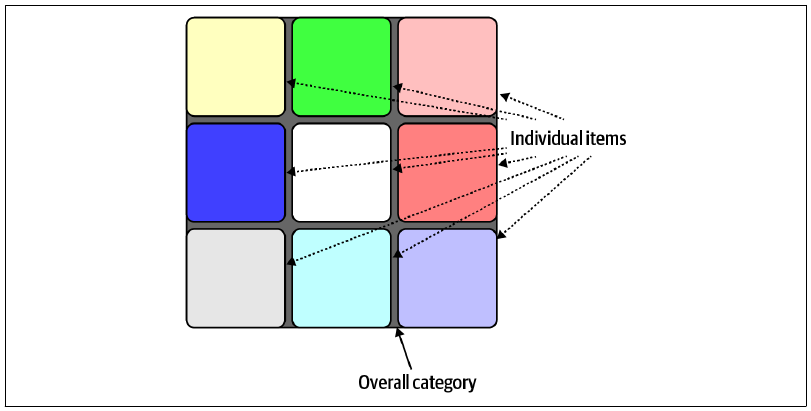
软件开发生态不断演化，并持续发现新能力。架构师做出具有长期影响的决策时，应该确认最近没有刚出现的新能力会改变决策标准。确保比较标准完全穷尽，可以鼓励这类探索。
15.2.3 “脱离上下文”陷阱
评估权衡时，架构师必须把决策置于上下文中，否则外部因素会不当地影响分析。某个方案往往有很多有利方面，却缺少决定成败的关键能力。架构师必须平衡正确的权衡集合，而不是所有可能的权衡。
例如，架构师可能需要决定：分布式架构中的公共功能应该使用共享服务，还是共享库，如图 图 15.2 所示。
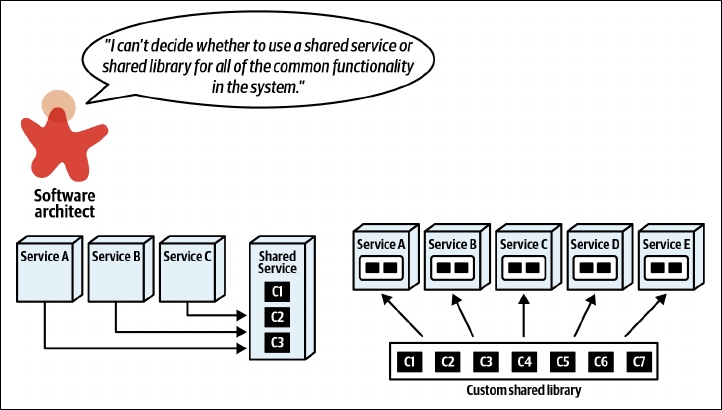
面对这项决策，架构师会研究两个候选方案：既研究通过资料发现的一般特征，也研究组织内部的实验数据。发现过程会形成图 图 15.3 所示的权衡矩阵。
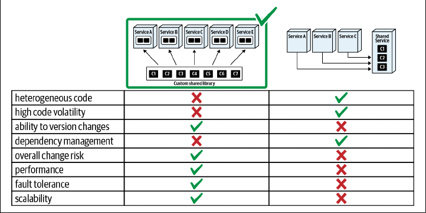
矩阵从总体上明显偏向共享库，因此架构师似乎有充分理由选择它。然而，这项决策正体现了脱离上下文的问题：一旦问题的额外上下文变得清楚，决策标准也会改变，如图 图 15.4 所示。
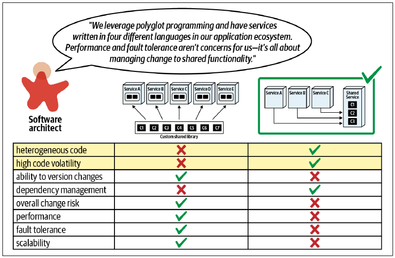
架构师继续研究的不只是服务与库的一般问题，也包括当前情境真正适用的上下文。记住，如果不结合具体情境，通用方案在现实架构中很少有用。
这个过程强调两项重要观察。第一，为决策找到最合适的上下文，可以减少架构师需要考虑的选项，大幅简化决策过程。软件先贤常给出“拥抱简单设计”的建议，却从不解释怎样实现。为决策找到正确而狭窄的上下文，让架构师可以思考更少的事，在许多情况下会简化设计。
第二，架构师必须理解迭代式架构设计的重要性：绘制候选架构方案，进行定性的“假如”推演，观察各架构维度如何相互影响。利用迭代式设计，架构师可以研究可能的方案，并发现决策所属的正确上下文。
15.2.4 为相关领域场景建模
架构师不应该脱离实际驱动因素，在真空中做决策。把能给具体方案增加价值的领域驱动因素重新加入决策过程，可以过滤可用选项，聚焦真正重要的权衡。
例如，架构师需要决定是创建单一支付服务，还是为每种支付类型建立单独服务，如图 图 15.5 所示。
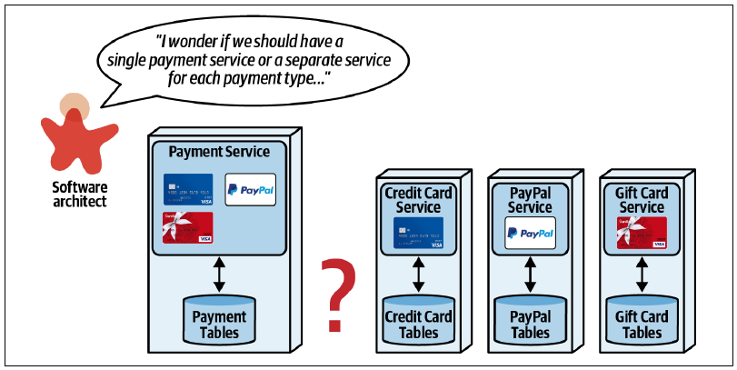
第 7 章介绍过，架构师可以利用许多整合因素与拆分因素辅助决策。不过，这些力量都很通用；架构师可以给几个可能场景建模，为决策增加更多细微差别。
例如，考虑图 图 15.6 所示的第一个场景：更新信用卡处理服务。
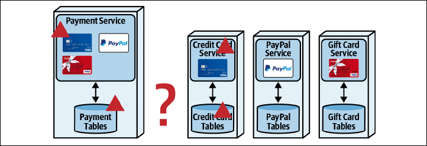
该场景中，独立服务具有更好的可维护性、可测试性与可部署性，全部源自量子级服务隔离。不过，独立服务的缺点，往往是为了避免服务之间的静态量子耦合而复制代码，损害拆分服务带来的收益。
第二个场景中，架构师为系统增加新的支付类型建模，见图 图 15.7。
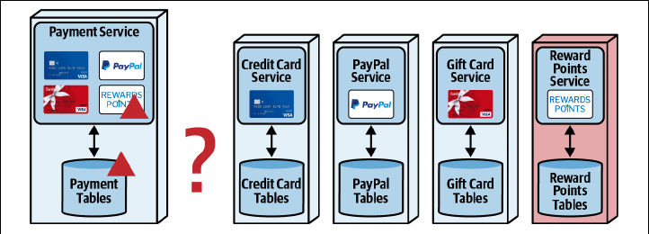
架构师增加积分支付类型，观察它对关注架构特性的影响；这凸显出独立服务在可扩展性方面的优势。到目前为止，独立服务很有吸引力。
然而，与许多情况一样，更复杂的工作流会暴露架构的难点，第三个场景见图 图 15.8。
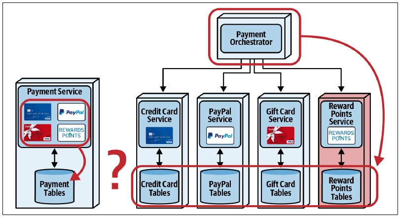
在该场景中，架构师开始看清这项决策真正涉及的权衡。使用独立服务需要协调这个工作流，最好交给协调器处理。不过，第 11 章讨论过，改用协调器很可能损害性能，也会增加数据一致性的难度。架构师可以避免协调器，但工作流逻辑总要存在于某个地方；记住，实现只能增加语义耦合，不能减少。
为三个场景建模后，架构师意识到真正的权衡取决于哪一项更重要：性能与数据一致性对应单一支付服务；可扩展性与敏捷性对应独立服务。
只从通用、抽象角度思考架构问题，能帮助架构师前进的距离有限。架构通常避开通用方案，因此架构师必须培养为相关领域场景建模的能力，以便更准确地进行权衡分析和决策。
15.2.5 用结论代替压倒性证据
为了了解特定权衡分析的所有方面，架构师很容易积累海量信息。人们学到新事物后通常都想告诉别人，特别是认为对方会感兴趣时。然而，架构师发现的许多技术细节对非技术利益相关者非常晦涩；细节过多还会淹没他们为决策提供有意义洞见的能力。
架构师不应展示收集到的所有信息，而应该把权衡分析缩减为几个关键点；这些关键点有时是多个单独权衡的聚合。
考虑微服务架构中一个常见问题：架构师应该选择同步通信还是异步通信，如图 图 15.9 所示。
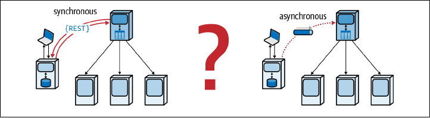
同步方案的协调器通过同步 REST 调用与工作流协作者通信；异步方案则使用消息队列实现异步通信。
考虑完指向两种方案的一般因素后，架构师接下来会考虑非技术利益相关者关心的具体领域场景，并建立类似表 表格 15.3 的权衡表。
15.2.5.1 权衡
| 同步优点 | 同步缺点 | 异步优点 | 异步缺点 |
|---|---|---|---|
| 信用审批一定会在客户请求结束之前开始 | 客户必须等待信用卡审批流程开始 | 流程启动无须等待 | 无法保证流程已经开始 |
| 协调器宕机时，客户申请会被拒绝 | 提交申请不依赖协调器 |
场景建模完成后，架构师可以向利益相关者给出最核心的决策：保证信用审批流程立即开始，与响应速度及容错能力，哪一个更重要？消除令人困惑的技术细节，让非技术领域利益相关者专注结果而不是设计决策，可以避免把他们淹没在细节海洋中。
15.2.6 避免蛇油与技术布道
热衷技术有一个不幸的副作用：技术布道。这种奢侈也许可以留给技术负责人和开发人员，但经常会给架构师制造麻烦。
当一个人开始为某种工具、技术、方法或其他让人兴奋的事物布道时，麻烦就会出现：他们开始放大优点，淡化缺点。不幸的是，在软件架构中，被忽略的权衡最终总会回来把事情复杂化。
架构师还应该警惕任何承诺惊人新能力的工具或技术；这类东西会定期出现，也会定期消失。始终要求布道者诚实评估优点与缺点——软件架构中不存在只有优点的事物——才能形成更均衡的决策。
例如，考虑一位过去使用某种方式取得成功，随后开始为它布道的架构师，如图 图 15.10 所示。
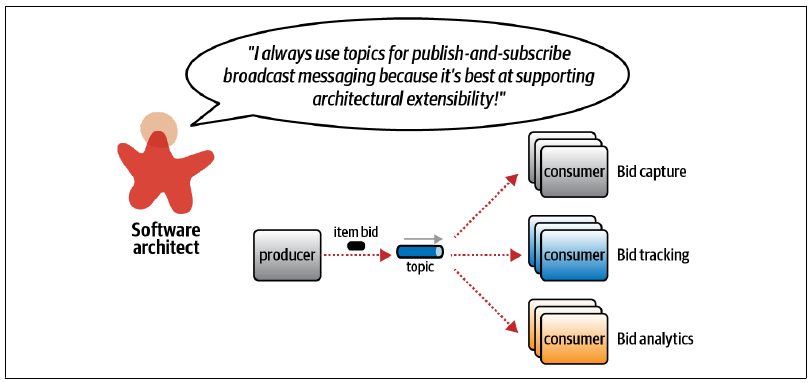
这位架构师过去很可能处理过以可扩展性为关键驱动架构特性的系统，因此相信这项能力永远会驱动决策过程。然而，架构方案很少能超出特定问题空间的狭窄边界。另一方面，个案证据往往很有说服力。怎样才能穿过下意识的布道，找到背后真正的权衡？
经验固然有用，但场景分析是架构师最强大的工具之一；它允许架构师在不建立完整系统的情况下进行迭代式设计。通过为可能的场景建模，架构师能够发现某个方案是否真的有效。
图 图 15.10 的例子中，现有系统使用单一主题广播变更。架构师希望给工作流增加竞价历史：团队应该保留现有发布-订阅方式，还是改为给每个消费者建立点对点消息？
为了发现这个具体问题的权衡，架构师应该利用两种拓扑为可能的领域场景建模。把竞价历史加入现有发布-订阅设计，见图 图 15.11。
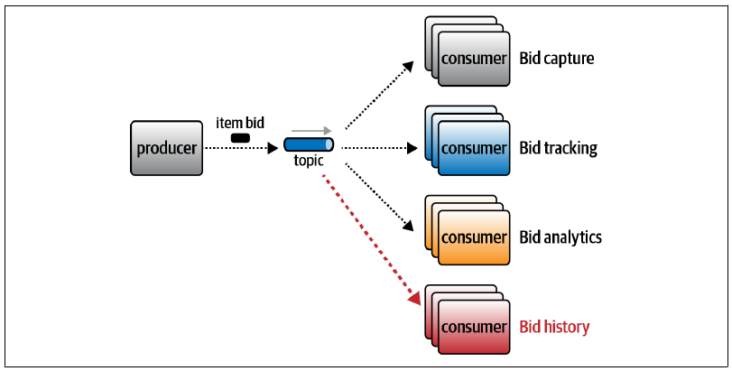
该方案虽然可行，却有一些问题。第一，如果团队需要为每个消费者采用不同契约怎么办？建立一份包罗万象的巨大契约，会形成第 13 章“用印记耦合管理工作流”所述的反模式；迫使所有团队统一使用单一契约，则会给架构增加偶然耦合点：一个团队改变所需信息，所有团队都必须协调这项变化。第二，数据安全怎么办？采用单一发布-订阅主题时，每个消费者都能访问全部数据，可能同时产生安全问题和第 14 章讨论过的 PII 问题。第三，架构师应该考虑不同消费者之间运行架构特性的差异。例如，运维团队希望监视队列深度，并为竞价捕获和竞价追踪启用自动扩展，但另外两项服务不需要；单一主题会阻止这种能力，因为消费者已经在运行上耦合在一起。
为了缓解这些缺点，架构师应该为替代方案建模，看看它是否解决前述问题，同时没有引入新的棘手问题。每项服务使用单独队列的版本见图 图 15.12。
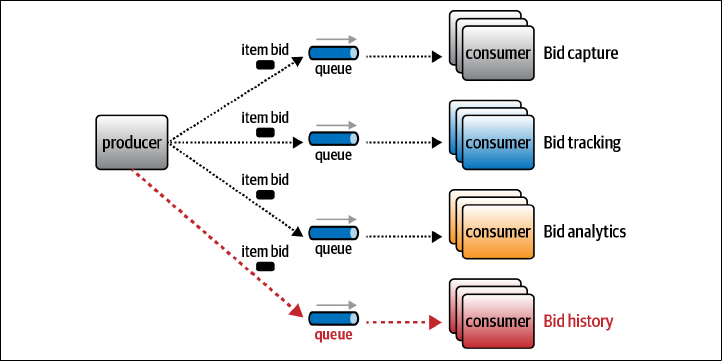
该工作流的每一部分——竞价捕获、竞价追踪、竞价分析与竞价历史——都使用自己的消息队列，解决了许多前述问题。第一，每个消费者可以拥有自己的契约，让消费者彼此解耦。第二，数据的安全访问与控制存在于生产者和每个消费者之间的契约中，允许信息内容与变化速率各不相同。第三，现在可以独立监视与扩展每条队列。
当然，读到这里，读者应该已经明白，点对点系统同样不完美，只是提供了另一套权衡。
架构师为两种方式建模后，两者差异似乎可以归结为表 表格 15.4 所示的选择。
15.2.6.1 权衡
| 点对点 | 发布-订阅 |
|---|---|
| 允许异构契约 | 可扩展性，容易增加新消费者 |
| 更细粒度的安全访问与数据控制 | |
| 每个消费者拥有独立运行特征 |
最后，架构师应该咨询所有相关方，例如运维人员、企业架构师和业务分析师，确定哪一组权衡更重要。
有时，架构师并非主动选择为某件事布道，而是被迫扮演反方，尤其当某项技术没有显而易见的优势时。技术会吸引拥趸，有时甚至非常狂热；他们倾向淡化缺点，放大优点。
例如，最近某个项目的技术负责人试图把本书一位作者拖进 monorepo 与基于主干开发的争论。两者都有优缺点，是经典的软件架构决策。技术负责人是 monorepo 的狂热支持者，并试图迫使作者站在反方——没有两方，就不算争论。
作者没有接受，而是指出这是一项权衡，并委婉解释：技术负责人宣扬的许多优点都要求某种纪律水平，而该团队过去从未表现出这种纪律；当然，他们以后肯定会进步。
架构师没有被迫站到反方，而是推动了一次基于现实、而不是通用方案的权衡分析。架构师同意尝试 monorepo，同时收集指标，确保方案的负面影响不会显现。例如，他们希望避免的有害反模式之一，是两个项目因为仓库位置接近而偶然耦合。因此，架构师与团队建立了一系列适应度函数，确保即使技术上可以创建耦合点，适应度函数也会阻止它。
不要让别人迫使你为某件事布道——把讨论拉回权衡。
我们建议架构师避免布道，努力成为权衡的客观裁判者。架构师为组织提供的真正价值，不是追逐一颗又一颗银弹，而是磨炼分析眼前权衡的技能。
15.3 Sysops Squad 案例：尾声
6 月 20 日，星期一，16:55
“好，我想我终于明白了。我们的架构与其他架构差异太大，不能真的依赖通用建议；必须持续做权衡分析这项困难工作。”
“正确。但这不是缺点，而是优势。只要所有人都学会隔离维度并进行权衡分析，我们就会了解自己架构中具体而真实的事物。谁在乎其他通用架构？如果能把一个问题的权衡数量压缩到足以真正建模和测试，我们就能获得对自身生态无价的知识。你知道，结构工程师建立了大量数学与其他预测工具，但建造他们的东西困难又昂贵。软件则要……软得多。我一直说，测试是软件开发的工程严谨性。我们虽然没有其他工程师那样的数学工具，却可以逐步建立并测试方案，获得更高灵活性，并利用柔性媒介的优势。以客观结果进行测试，可以让权衡分析从定性走向定量，从推测走向工程。对自身独特生态掌握的具体事实越多，分析就能越精确。”
“有道理。要不要参加下班后的聚会，庆祝这次大逆转？”
“当然。”